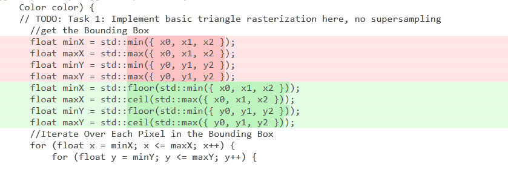

Task 1: Rasterization of Triangles
Overview
The task involves implementing basic triangle rasterization without supersampling. The goal is to rasterize triangles using the point-in-triangle test for each pixel, with a sample point located at the center of each pixel. The implementation should ensure that the triangle is drawn correctly regardless of its winding order and that no edges are left un-rasterized. The approach involves calculating the triangle's bounding box and iterating over each pixel within the bounding box to perform the point-in-triangle test. The details of the steps are:
- Finding the Bounding Box: The first step is calculating the smallest rectangle (bounding box) that completely encloses the triangle. This is done by finding the minimum and maximum X and Y coordinates among the triangle's three vertices. This step is crucial because it limits the area needed to check for filling in the triangle, making the process more efficient.
- Iterating Over Each Pixel: Next, the code loops through each pixel within this bounding box. For each pixel, it determines if the pixel's center is inside the triangle.
- Point-in-Triangle Test: Barycentric coordinates must be applied to decide if a pixel is part of the triangle. By adding 0.5 to both the X and Y coordinates of the pixel, it can be ensured that the test is done at the center of the pixel, not the corner. This is a more accurate way to color the triangle.
- Coloring the Pixel: If the center of a pixel is found to be inside the triangle, the pixel is colored with the specified color.
In Lecture 2, we discussed how to test whether a point is inside a triangle. A common approach is the vector-based method. For me, the vector method is intuitive, essentially involving a simple check of the cross product values to see if they are on the same side. If a point is on the same side of all edges, then it's inside the triangle. A key aspect of this method is maintaining a consistent direction for the edges, typically clockwise or counterclockwise. If the edges of the triangle are arranged in a consistent direction (such as clockwise or counterclockwise), then this method is very effective. Based on this, I implemented this approach.
Vector method
bool RasterizerImp::isPointInTriangle(float x, float y, float x0, float y0, float x1, float y1, float x2, float y2) {
// Method 2: Vector cross product(edge function) method
// Convert triangle vertices and point into vectors
float v0x = x1 - x0;
float v0y = y1 - y0;
float v1x = x2 - x1;
float v1y = y2 - y1;
float v2x = x0 - x2;
float v2y = y0 - y2;
// Convert the test point into vectors relative to triangle vertices
float pv0x = x - x0;
float pv0y = y - y0;
float pv1x = x - x1;
float pv1y = y - y1;
float pv2x = x - x2;
float pv2y = y - y2;
// Compute the cross products
float cross0 = v0x * pv0y - v0y * pv0x;
float cross1 = v1x * pv1y - v1y * pv1x;
float cross2 = v2x * pv2y - v2y * pv2x;
// Check the sign of the cross products to determine if the point is on the same side of all edges
if ((cross0 >= 0 && cross1 >= 0 && cross2 >= 0) || (cross0 <= 0 && cross1 <= 0 && cross2 <= 0)) {
return true; // Point is inside the triangle
}
else {
return false; // Point is outside the triangle
}
}
Another method is the barycentric method, which we discussed in Lecture 5. This method can be efficiently
constrained within the triangle's bounding box and can easily handle different winding orders.
barycentric method
bool RasterizerImp::isPointInTriangle(float x, float y, float x0, float y0, float x1, float y1, float x2, float y2) {
// Method 1: Calculate vectors & dot products for barycentric coordinates
float denom = (y1 - y2) * (x0 - x2) + (x2 - x1) * (y0 - y2);
float a = ((y1 - y2) * (x - x2) + (x2 - x1) * (y - y2)) / denom;
float b = ((y2 - y0) * (x - x2) + (x0 - x2) * (y - y2)) / denom;
float c = 1 - a - b;
// Check if point is inside the triangle
return a >= 0 && a <= 1 && b >= 0 && b <= 1 && c >= 0 && c <= 1;
}
I also encountered a small issue regarding the rounding, which was fixed by using floor and ceiling rounding methods


Fixed - svg3notfilled
I am trying to improve function, and the first thing to do is precompute constants: Compute values that do not change within the loop before entering it. By simply moving 'float denom = (y1 - y2) * (x0 - x2) + (x2 - x1) * (y0 - y2);' out of my loop, I saved 300 microseconds(I called the timer functions in drawrend::redraw). I'm thinking about how to not check every sample in the bounding box, but honestly, I haven't figured it out yet. I don't know if it's possible to perform Coarse Clipping again before starting to iterate over the bounding box. I've seen suggestions to use hierarchical data structures such as Quadtree or Grid to organize space, which can quickly exclude areas not inside the triangle. Those methods seemed to be especially effective when dealing with a large number of triangles. However, I haven't implemented it yet.
Before
After